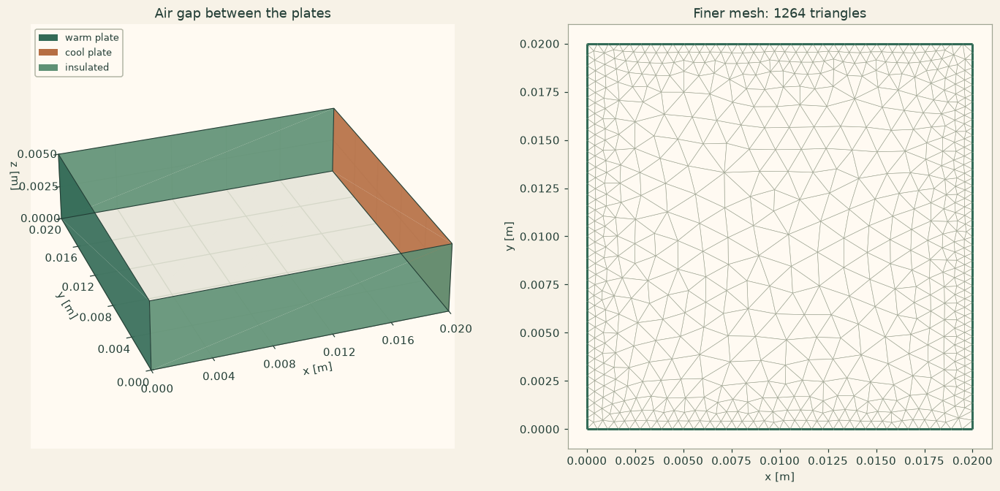

Docs › Examples › Free convection of air between two vertical plates
Free convection · 2D
Free convection of air between two vertical plates
Air in a 20 mm gap between a warm and a cool vertical plate starts to circulate and carries up to 2.2 times, at the strongest convection 4.5 times, the heat that conduction alone would.
Run locally with OneSimulation. The example downloads are free. Running them requires an activated runtime. Runtime Alpha 0.2.1a7 · CPython 3.13 on macOS (Apple Silicon), Ubuntu 22.04 (x86-64), and Windows x64. Installation and activation · View pilot plans. Scope of the reference checks.

What it computes
OneSimulation couples the steady Navier-Stokes equations (Taylor-Hood) and the heat transport (quadratic elements) both ways through the Boussinesq buoyancy force, with density and expansion coefficient taken from the air, and solves them on the cross-section of a STEP slab for four temperature differences: by stationary partitioned iteration from 1.2 to 12.1 K, and at Ra = 1e5 with one monolithic Newton method over both fields, reached by continuation in the buoyancy. Heat flux, Nusselt number and velocities come straight from the solved fields. The script that builds the STEP file comes with the notebook.
What it checks
The Nusselt numbers 1.1178, 2.2447 and 4.5213 lie -0.02 %, +0.08 % and +0.05 % from the de Vahl Davis benchmark at Ra = 1e3, 1e4 and 1e5, the heat entering at the warm plate leaves at the cool plate to five digits, the largest vertical velocities are within 0.12 % and 0.17 % of the benchmark, the enclosure correlation is matched within its usual scatter (-12 %, -7 % and -4 %), and the coarser mesh changes the Nusselt number by 0.004 %.
Geometry
The notebook starts at the import of the CAD file air_cavity_free_convection.step: STEP (AP242), readable by any CAD program, with the names of the faces that the boundary conditions use. Put it next to the notebook.

The geometry script
The script air_cavity_free_convection_geometry.py builds the geometry with the CAD objects of OneSimulation and writes the file. Change a dimension there, run it, and run the notebook again.
"""Geometry of the OneSimulation example "Free convection of air between two vertical plates".
Builds the air gap between two vertical plates, 20 mm apart and 20 mm high, as a slab 5 mm deep
with the CAD objects of OneSimulation and writes air_cavity_free_convection.step. The faces are
named hot_plate (x = 0), cold_plate (x = 20 mm), floor and ceiling; the example computes on the
cross-section at half depth.
"""
from onesim.cad.d3 import Box
gap = Box(length=0.02, width=0.02, height=0.005)
gap = gap.grouped(
hot_plate=gap.boundaries.x_min,
cold_plate=gap.boundaries.x_max,
floor=gap.boundaries.y_min,
ceiling=gap.boundaries.y_max,
)
gap.save("air_cavity_free_convection.step")The notebook
The complete notebook, cell by cell. Run it to produce the figures and the comparison printout.
Two vertical plates face each other across an air gap of width \(L=20\) mm and height \(H=20\) mm; floor and ceiling are insulated. The left plate is warmer than the right one by \(\Delta T\), both symmetric about 20 °C. The air rises at the warm plate, falls at the cool one, and the circulation carries more heat across the gap than conduction alone would. With the Boussinesq approximation the steady flow obeys
with air at 20 °C: \(\rho=1.204\) kg/m³, \(\mu=1.825\cdot10^{-5}\) Pa s, \(k=0.02587\) W/(m K), \(c_p=1006\) J/(kg K) (\(Pr=0.71\)) and \(\beta=1/T_0\). The temperature differences are chosen for Rayleigh numbers \(Ra=g\beta\Delta T L^3/(\nu\alpha)\) of \(10^3\), \(3\cdot10^3\) and \(10^4\): from about 1 K to 12 K. A fourth case at \(Ra=10^5\) needs \(\Delta T\approx121\) K in this small gap; with \(\beta\Delta T\approx0.4\) real air would ask for the variable-density equations, so this case only serves the comparison with the Boussinesq benchmark at strong convection.
The gap comes from the CAD file air_cavity_free_convection.step, written by air_cavity_free_convection_geometry.py with the CAD objects of OneSimulation.
| face | flow | heat | |---|---|---| | hot_plate | no slip | \(T_0+\Delta T/2\) | | cold_plate | no slip | \(T_0-\Delta T/2\) | | floor, ceiling | no slip | insulated |
Reference. The square cavity at \(Pr=0.71\) is the benchmark of G. de Vahl Davis, Int. J. Numer. Methods Fluids 3, 249-264 (1983): mean Nusselt numbers 1.118 at \(Ra=10^3\), 2.243 at \(Ra=10^4\) and 4.519 at \(Ra=10^5\), largest vertical velocity 19.617 \(\alpha/L\) at \(Ra=10^4\) and 68.59 \(\alpha/L\) at \(Ra=10^5\). The engineering correlation for enclosures with \(1<H/L<2\) (Catton; F. P. Incropera et al., Fundamentals of Heat and Mass Transfer, Eq. 9.51), \(\overline{Nu}=0.18\,\big(Pr\,Ra/(0.2+Pr)\big)^{0.29}\), holds for \(Pr\,Ra/(0.2+Pr)>10^3\), i.e. above \(Ra\approx1300\).
import numpy as np
from onesim.cad.exchange import load
from onesim.materials import ThermalFluid
from onesim.meshing import TriangularMesher
from onesim.numerics import Numerics
from onesim.numerics.coupled_systems import (
CouplingContinuation,
MonolithicStationaryCoupling,
StationaryPartitionedCoupling,
)
from onesim.numerics.fem import FiniteElement, GalerkinAdvection, Lagrange, TaylorHood
from onesim.numerics.field_transfer import FieldInterpolation
from onesim.numerics.linear import SparseDirect
from onesim.numerics.nonlinear import FixedPoint, Newton
from onesim.physics.heat_transfer import (
BoussinesqBuoyancy,
ConvectiveHeatTransfer,
FixedTemperature,
HeatFlux,
)
from onesim.physics.hydrodynamics import IncompressibleNavierStokes, NoSlipWall
from onesim.simulation import Problem, Simulation
from onesim.simulation.field_connections import FieldCoupling
from onesim.simulation.field_constraints import MeanValue
from onesim.simulation.initial_conditions import InitialValue
from onesim.visualization import plots, theme
theme.set()Geometry and mesh
The cross-section at half depth keeps the face names. Two meshes refine towards the plates and the insulated faces, where the boundary layers sit: from 1.6 mm to 0.4 mm and from 2.4 mm to 0.6 mm; a third one for the thin layers at \(Ra=10^5\) goes from 1.2 mm to 0.24 mm.
part = load("air_cavity_free_convection.step")
gap = part.section((0, 0, 1), origin=(0, 0, part.size[2] / 2))
faces = gap.boundaries
width, height = gap.size[:2]
meshes = {
name: TriangularMesher(
target_size=core,
size_field=lambda p, core=core, wall=wall: np.minimum(
core,
wall
+ 0.5
* np.minimum(
np.minimum(p[:, 0], width - p[:, 0]),
np.minimum(p[:, 1], height - p[:, 1]),
),
),
).generate(gap)
for name, core, wall in (
("coarser", 2.4e-3, 6e-4),
("finer", 1.6e-3, 4e-4),
("layers", 1.2e-3, 2.4e-4),
)
}
fig = plots.figure(1, 2, size=(13, 6))
plots.geometry(
part,
selection={
"warm plate": part.boundaries.hot_plate,
"cool plate": part.boundaries.cold_plate,
"insulated": part.boundaries.floor | part.boundaries.ceiling,
},
labels=False,
camera=plots.Camera(elevation=30, azimuth=-110),
title="Air gap between the plates",
ax=fig[0],
)
plots.mesh(
meshes["finer"],
groups=("all",),
legend=False,
title=f"Finer mesh: {meshes['finer'].cell_count} triangles",
ax=fig[1],
)
plots.show()Model
The flow (Taylor-Hood elements) and the heat transport (quadratic elements) share the mesh. BoussinesqBuoyancy turns the temperature into the body force of the flow, taking \(\rho\) and \(\beta\) from the ThermalFluid; the solved velocity carries the heat back. Up to \(Ra=10^4\) StationaryPartitionedCoupling alternates the two stationary solvers until both fields settle. At \(Ra=10^5\) MonolithicStationaryCoupling solves flow and heat together with one Newton method (both coupling blocks in its Jacobian), reaching the case through \(Ra=10^4\) with CouplingContinuation. The three small temperature differences are solved on the finer mesh, the largest of them also on the coarser, \(Ra=10^5\) on the boundary-layer mesh.
ambient, gravity = 293.15, 9.81
air = ThermalFluid(
density=1.204,
dynamic_viscosity=1.825e-5,
thermal_conductivity=0.02587,
specific_heat_capacity=1006.0,
thermal_expansion_coefficient=1 / ambient,
)
nu, alpha = air.dynamic_viscosity / air.density, air.thermal_conductivity / (
air.density * air.specific_heat_capacity
)
flow = IncompressibleNavierStokes(domain=gap.domain(), material=air)
heat = ConvectiveHeatTransfer(domain=gap.domain(), material=air, velocity=None)
numerics = {
flow: Numerics(
spatial=FiniteElement(element=TaylorHood()),
initial_guess={flow.velocity: (0.0, 0.0)},
nonlinear_solver=Newton(
linear_solver=SparseDirect(),
absolute_tolerance=1e-12,
relative_tolerance=1e-9,
),
),
heat: Numerics(
spatial=FiniteElement(
element=Lagrange(order=2), convection=GalerkinAdvection()
),
linear_solver=SparseDirect(),
),
}
results = {}
for rayleigh, name in (
(1e3, "finer"),
(3e3, "finer"),
(1e4, "finer"),
(1e4, "coarser"),
(1e5, "layers"),
):
delta = (
rayleigh * nu * alpha / (gravity * air.thermal_expansion_coefficient * width**3)
)
problem = Problem(
name=f"Air between two plates, dT = {delta:.2f} K",
geometry=gap,
physics=(flow, heat),
boundary_conditions=(
NoSlipWall(physics=flow, boundary=faces.all),
FixedTemperature(
physics=heat, boundary=faces.hot_plate, value=ambient + delta / 2
),
FixedTemperature(
physics=heat, boundary=faces.cold_plate, value=ambient - delta / 2
),
HeatFlux(physics=heat, boundary=faces.floor | faces.ceiling, value=0.0),
),
constraints=(MeanValue(flow.pressure, 0.0),),
initial_conditions=(InitialValue(heat.temperature, ambient),),
couplings=(
FieldCoupling(
source=heat.temperature,
target=flow.field("body_force"),
transfer=BoussinesqBuoyancy(
gravity=(0, -gravity), reference_temperature=ambient
),
),
FieldCoupling(
source=flow.velocity,
target=heat.advecting_velocity,
transfer=FieldInterpolation(),
),
),
)
results[rayleigh, name] = (
delta,
Simulation(
problem=problem,
mesh={flow: meshes[name], heat: meshes[name]},
numerics=numerics,
coupling_solver=(
MonolithicStationaryCoupling(
stationary_systems=(flow, heat),
continuation=CouplingContinuation(factors=(0.1, 1.0)),
nonlinear_solver=Newton(
linear_solver=SparseDirect(),
relative_tolerance=1e-8,
absolute_tolerance=1e-12,
),
)
if rayleigh > 1e4
else StationaryPartitionedCoupling(
stationary_systems=(flow, heat),
iteration=FixedPoint(
relative_tolerance=1e-6,
absolute_tolerance=1e-9,
maximum_iterations=150,
relaxation=0.7,
),
)
),
).solve_stationary(),
)Heat flux between the plates
The heat per metre of plate length entering at the warm plate gives the mean heat flux and the Nusselt number \(\overline{Nu}=\bar q\,L/(k\,\Delta T)\); velocities are also given in units of \(\alpha/L\) for the benchmark.
catton = lambda ra: 0.18 * (nu / alpha / (0.2 + nu / alpha) * ra) ** 0.29
benchmark = {1e3: 1.118, 1e4: 2.243, 1e5: 4.519}
line = np.linspace(0.0, 1.0, 2001)
nusselt = {}
print(f"Pr = {nu / alpha:.4f}")
print(
" Ra mesh dT [K] heat in [W/m] heat out [W/m] flux [W/m²] Nusselt benchmark correlation v_max [mm/s]"
)
for (rayleigh, name), (delta, result) in results.items():
temperature, velocity = result.field(heat.temperature), result.field(flow.velocity)
v = velocity.evaluate(
np.column_stack((line * width, np.full_like(line, height / 2)))
)[:, 1]
nusselt[rayleigh, name] = -temperature.boundary_flux(faces.hot_plate) / (
air.thermal_conductivity * delta
)
print(
f"{rayleigh:7.0f} {name:8s} {delta:7.3f} {-temperature.boundary_flux(faces.hot_plate):15.5f} "
f"{temperature.boundary_flux(faces.cold_plate):16.5f} {-temperature.boundary_flux(faces.hot_plate) / height:13.2f} "
f"{nusselt[rayleigh, name]:9.4f} {benchmark[rayleigh] if rayleigh in benchmark else '-':>11} {catton(rayleigh):13.3f} {1e3 * v.max():14.3f}"
)
finest = {rayleigh: name for rayleigh, name in results if name != "coarser"}
for rayleigh in benchmark:
print(
f"Ra = {rayleigh:.0e}: Nusselt number {100 * (nusselt[rayleigh, finest[rayleigh]] / benchmark[rayleigh] - 1):+.2f} % from the benchmark"
)
for rayleigh in (3e3, 1e4, 1e5):
print(
f"Ra = {rayleigh:.0e}: Nusselt number {100 * (nusselt[rayleigh, finest[rayleigh]] / catton(rayleigh) - 1):+.1f} % from the correlation"
)
for rayleigh, reference, position in ((1e4, 19.617, 0.119), (1e5, 68.59, 0.066)):
v = (
results[rayleigh, finest[rayleigh]][1]
.field(flow.velocity)
.evaluate(np.column_stack((line * width, np.full_like(line, height / 2))))[:, 1]
)
print(
f"Ra = {rayleigh:.0e}: largest vertical velocity {v.max() * width / alpha:.3f} alpha/L at x = {line[v.argmax()]:.3f} L, "
f"benchmark {reference} at {position} L ({100 * (v.max() * width / alpha / reference - 1):+.2f} %)"
)
print(
f"mesh study, Ra = 1e4: Nusselt number {nusselt[1e4, 'coarser']:.4f} ({meshes['coarser'].cell_count} triangles) and "
f"{nusselt[1e4, 'finer']:.4f} ({meshes['finer'].cell_count} triangles)"
)Figure
Temperature with isotherms and the streamlines coloured by speed at \(\Delta T\) for \(Ra=10^4\), the Nusselt number over the Rayleigh number against the references, and the vertical velocity across the gap at mid-height for the four temperature differences.
delta, result = results[1e4, "finer"]
grid_x, grid_y = np.linspace(0.0, width, 61), np.linspace(0.0, height, 61)
flow_samples = 1e3 * result.field(flow.velocity).evaluate(
np.array([[a, b] for a in grid_x for b in grid_y])
).reshape(61, 61, 2)
sweep = np.geomspace(1.3e3, 1.2e5, 100)
fig = plots.figure(2, 2, size=(17, 12.5))
plots.surface(
result.field(heat.temperature),
component=lambda T, position: T - 273.15,
limits=(np.ceil(20 - delta / 2), np.floor(20 + delta / 2)),
contours=12,
subdivisions=2,
label="T [°C]",
title=f"Temperature, Ra = 1e4 (dT = {delta:.1f} K)",
ax=fig[0],
)
plots.streamlines(
grid_x,
grid_y,
flow_samples[..., 0],
flow_samples[..., 1],
density=1.4,
label="speed [mm/s]",
title="Streamlines of the circulation",
ax=fig[1],
)
plots.line(
sweep,
{"enclosure correlation (Catton)": catton(sweep)},
points={
"OneSimulation": (
list(finest),
[nusselt[ra, name] for ra, name in finest.items()],
),
"de Vahl Davis (1983)": (list(benchmark), list(benchmark.values())),
},
hlines={"conduction only": 1.0},
scale="logx",
ylimits=(0.8, 5.0),
xlabel="Rayleigh number",
ylabel="mean Nusselt number",
title="Heat transfer across the gap",
legend="upper left",
ax=fig[2],
)
plots.line(
1e3 * width * line,
{
f"dT = {d:.1f} K": 1e3
* r.field(flow.velocity).evaluate(
np.column_stack((line * width, np.full_like(line, height / 2)))
)[:, 1]
for (ra, name), (d, r) in results.items()
if name != "coarser"
},
hlines=0.0,
xlabel="distance from the warm plate [mm]",
ylabel="vertical velocity [mm/s]",
title="Vertical velocity at mid-height",
legend="upper right",
ax=fig[3],
)
plots.show()Going further
Make the gap narrower and taller in air_cavity_free_convection_geometry.py (a double-glazing gap) and compare with the correlations for tall enclosures; tilt gravity to model an inclined gap; or replace air by water. The same coupling in dimensionless form with the full benchmark table is the example differentially_heated_square_cavity.